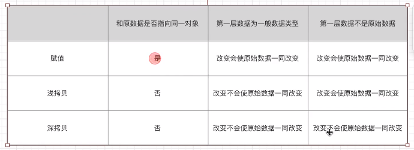

目标
什么是深浅拷贝?
实现的方式?
在vue中的使用
前置知识
js的一般数据类型的存储
js的引用类型的数据存储
深拷贝和浅拷贝
浅拷贝是创建一个新对象,这个对象有着原始对象属性值的一份精确拷贝,如果属性时基本类型,拷贝的就是基本类型的值
如果属性时引用类型,拷贝的就是内存地址,所以如果其中一个对象改变了这个地址,就会影响到另外一个对象
深拷贝是将一个对象从内存值完整的拷贝一份出来,从堆内存中开辟一个新的区域存放新对象,且修改对象不会影响到原对象
浅拷贝和赋值的区别
当我们把一个对象赋值给一个新的变量的时候,赋的其实是该对象在栈中的地址,而不是堆中的数据，也就是两个对象指向的是同一个存储空间
无论哪个对象发生改变，其实都是改变的存储空间的内容，因此两个对象是联动的
浅拷贝:
重新在堆中创建内存,拷贝前后对象基本数据类型互不影响，但拷贝前后对象的引用类型因共享同一块内存会互相音响
深拷贝:
从堆内存中开辟一个新的区域存放新对象中,对对象中的子对象进行递归拷贝,拷贝前后的连个对象互不影响